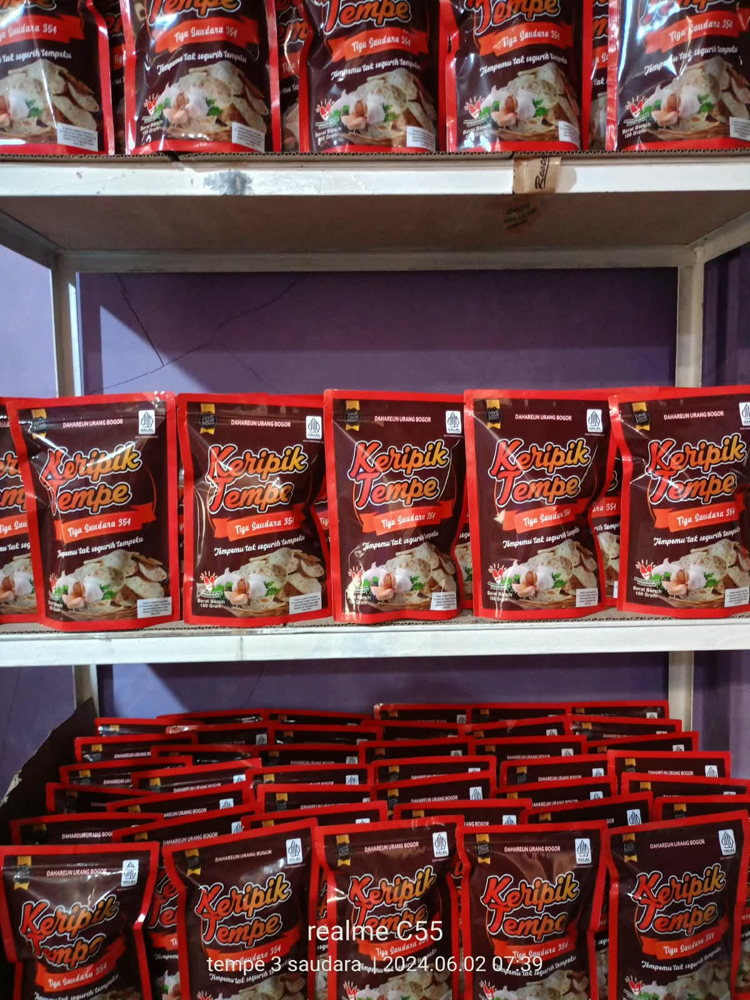
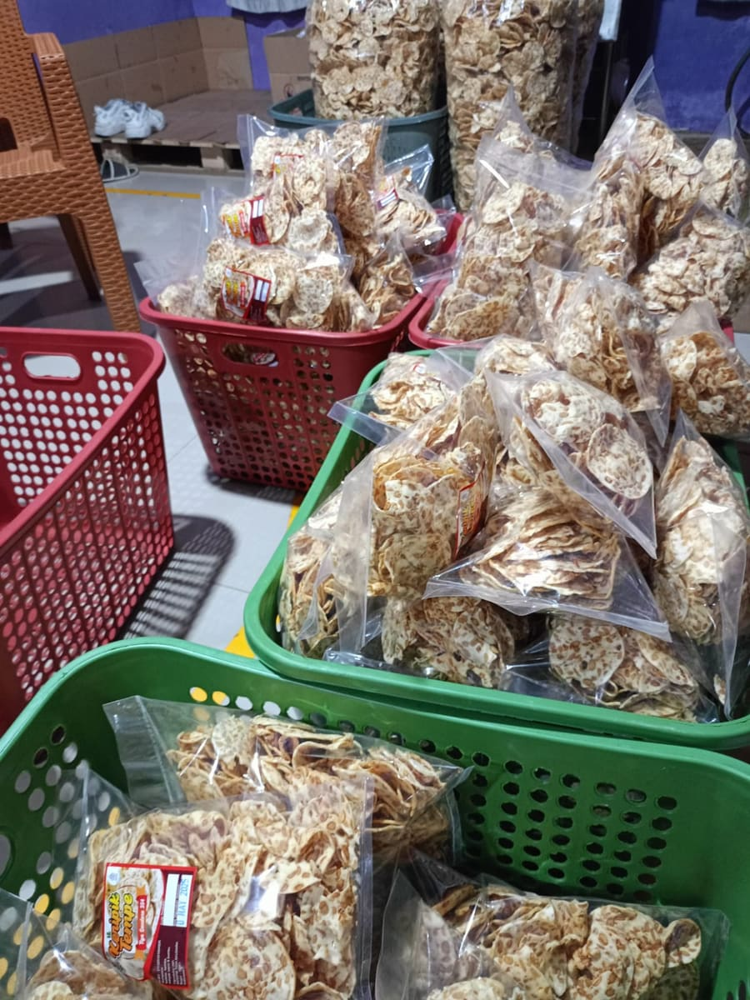
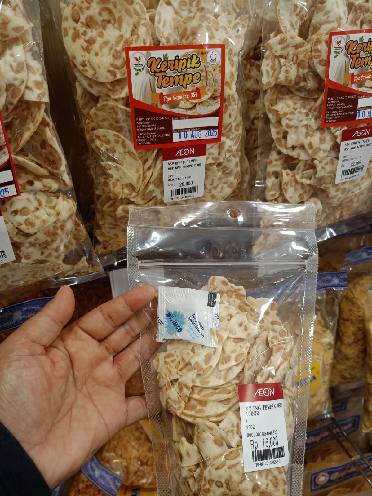
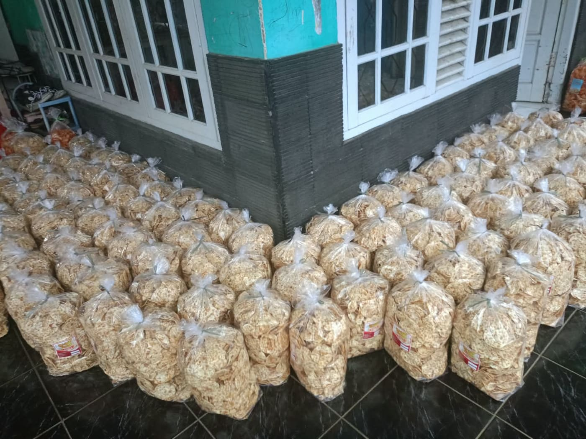
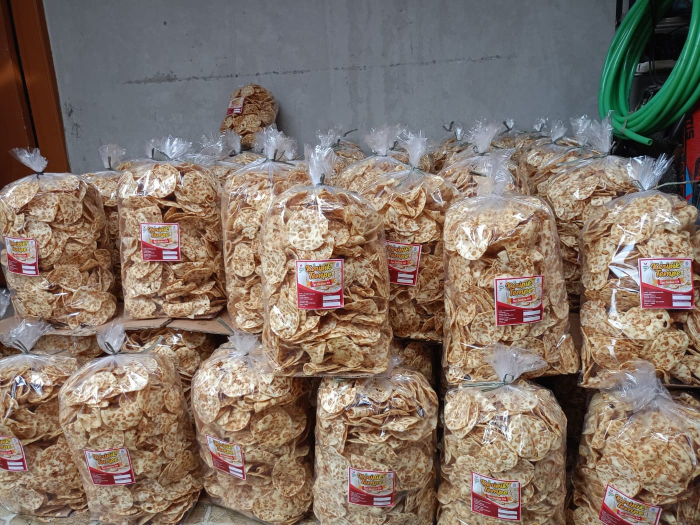

Buatan Bogor
Keripik Tempe Tiga Saudara 354
Tipis, renyah, gurih bawang.
Tempe kedelai dan tapioka, digoreng bareng bawang putih dan cabai. Enak buat teman ngopi, dan sering dibawa pulang sebagai oleh-oleh dari Bogor.
- Halal
- P-IRT 211320101004820
- BPOM MD
- Kedelai & tapioka


Baru digoreng tiap pagi
Mulai dari Rp 16.000
- Halal Logo halal tercantum di kemasan
- P-IRT 211320101004820 Nomor izin produksi pangan dan industri
- BPOM MD 211320101004820 Nomor izin ini juga ada di label
- Bogor Diproduksi di workshop kami sendiri
Kenapa enak
Empat hal yang bikin orang beli lagi
-
01
Tipis dan renyah
Tempe dipotong tipis lalu ditekan ringan sebelum digoreng. Kaku di tangan, renyah sampai gigitan terakhir.
-
02
Gurih bawangnya terasa
Bawang putih, bawang merah, dan cabai digoreng bareng lalu dicampur. Aroma wangi, rasanya nempel.
-
03
Digoreng tiap pagi
Tempe segar dipanen pagi, langsung digoreng, langsung dikemas. Tidak ada stok lama yang ditunggu.
-
04
Harga masuk akal
Tidak harga mahal-mahal. Yang penting keripiknya enak dan uangnya sampai ke tangan penjualnya.
Produk
Tiga ukuran, isinya sama-sama tempe digoreng
Harga di bawah ini diambil dari label rak. Promo terbaru dan pemesanan, tanya saja adminnya.
-
Kemasan 160 gram
Harga ecer & promo
Kemasan resmi yang paling sering diambil dari rak. Tempe digoreng dengan bawang putih dan cabai, lalu dikemas rapat biar tetap renyah.
Pesan 160 gram -

Kemasan 200 gram
Rp 28.800
Buat stok di rumah, atau buat dicocol sambal. Kuat nempel di tangan dan nggak gampang hancur.
Pesan 200 gram -
Kemasan 100 gram
Rp 16.000
Paling ringan buat nyoba, buat oleh-oleh kecil, atau nemenin ngopi sore. Isinya tetap renyah sama.
Pesan 100 gram
Harga di atas diambil dari label rak, jadi bisa berubah tiap batch. Untuk harga terbaru, promo, dan ongkir, tanya admin lewat WhatsApp.
Mau pesan, tapi masih ragu soal varian?
Kirim chat, nanti kami bantu pilihkan ukuran yang paling pas buat kebutuhanmu.
Cerita singkat
Bahan tempe, diolah jadi camilan yang bisa dibawa ke mana-mana
Di Bogor, tempe itu bahan sehari-hari. Dipakai buat sambal, buat lauk, buat ngopi. Sayang kalau bagian yang paling enak dimakan mentah.
Tiga Saudara 354 mulai dari situ: tempe yang dibiarin kering, diiris tipis, lalu digoreng sampai renyah. Terakhir jadi camilan yang bisa dibawa pulang buat oleh-oleh.
Cara membuatnya
- Tempe dipanen pagi — tempe segar langsung diolah, nggak ditahan semalaman.
- Iris dan press — diiris tipis lalu ditekan ringan. Pori-porinya terbuka, makanya keripiknya ringan dan renyah.
- Goreng bareng bumbu — minyak baru, suhu dijaga, bawang putih dan cabai masuk bareng.
- Tiris dan kemas — Tiris panas, dinginkan sebentar, dikemas rapat. Tiap batch kami catat tanggal produksinya.

Oleh-oleh dari Bogor
Keripik tempe Bogor yang ringan dibawa pulang
Keripik Tempe Tiga Saudara 354 sering dipilih sebagai oleh-oleh dari Bogor karena ringan dibawa dan tahan disimpan. Kemasan 100 gram muat di tas, dan keripiknya masih renyah walau sudah dibuka berhari-hari.
Kalau cari camilan khas Bogor yang bisa dibagikan ke banyak orang, kemasannya tersedia mulai 100 gram sampai 200 gram. Untuk oleh-oleh dalam jumlah banyak, kami bisa kirim rencpack ke alamat tujuan.
Produknya digoreng di Bogor dan sudah tersedia di rak supermarket, jadi bisa juga dibeli langsung di toko tanpa pesanan.
Kenapa cocok buat oleh-oleh
- Ringan, nggak berat dibawa di perjalanan.
- Tahan disimpan, nggak gampang melempem.
- Kemasan rapi, gampang dibagikan ke banyak orang.
Dari rak dan workshop kami
Foto produknya asli, bukan foto stok
-
-
-
Testimoni
Testimoni dari pembeli
Belum ada testimoni di sini
Kalau kamu sudah pernah membeli, kirim foto atau ulasan ke admin. Semua kami tampilkan apa adanya, tanpa diedit.
Untuk reseller
Jual keripik tempe Tiga Saudara 354
Untuk pemilik toko, kios, dan yang jualan lewat grup WhatsApp. Order pertama bisa mulai dari sampel.
Yang Anda dapat
- Mulai dari sampel. Order pertama minimal 1 kilo, jadi tidak perlu modal besar atau gudang.
- Harga per kilo, turun sesuai volume. Pricelist lengkap kami kirim setelah Anda daftar.
- Bisa repack dengan label sendiri. Rencpack datang dalam bulk, repack memakai label toko Anda, silica gel, atau display sendiri.
- Foto produk untuk jualan. Foto produknya boleh dipakai buat katalog dan konten media sosial toko Anda.
Pertanyaan yang sering masuk
- Minimum order berapa?
- Reseller baru boleh ambil sampel dulu. Untuk order pertama, minimal 1 kilo.
- Harga dan marginnya berapa?
- Daftar harga per kilo dikirim setelah Anda daftar, lengkap dengan rentang harga per volume.
- Bisa kirim ke luar Jawa?
- Bisa, via ekspedisi. Ongkos kirim mengikuti berat, jadi untuk volume besar ongkir per kilo lebih murah.
- Bagaimana cara memulai?
- Chat admin, minta pricelist dan sampel, tasting, lalu konfirmasi order. Sisanya tinggal jualan di sekitar Anda.
Paket isi
- Rencpack 1 kgSiap repack ke toko sendiri.
- Rencpack 5 kgBuat yang sudah rutin jualan di sekitaran sendiri.
- Rencpack 25 kgStok gudang untuk reseller aktif dan repeat order.

Ambil pricelist reseller
Isi seperlunya, terus kirim lewat WhatsApp. Nanti kami balas daftar harga per volumenya.
Pertanyaan yang sering masuk
FAQ
Keripik tempe ini sudah ada izinnya?
Sudah. P-IRT 211320101004820 dan izin BPOM MD tercantum di kemasan, dan logo halalnya kelihatan di label. Kalau mau lihat komposisi lengkap (kedelai, tapioka, minyak sjaraf & bumbu), cek label di kemasan atau minta fotonya lewat WhatsApp.
Bedanya yang 100 gram, 160 gram, sama 200 gram apa?
Isi dan kemasannya. Isinya sama-sama tempe digoreng. Yang 100 gram paling ringan buat nyoba, 160 gram kemasan resmi brand, 200 gram buat stok di rumah.
Bisa ambil sendiri? Di mana?
Bisa. Produk kami juga ada di rak AEON dan beberapa minimarket. Buat alamat lengkapnya, chat admin ya supaya lokasi spesifiknya dikasih tahu.
Berapa ongkir ke luar Jawa?
Ongkir dihitung dari berat dan kota tujuan. Karena harga bisa berubah tiap hari, sekalian chat admin biar ongkir dan stoknya dicek bareng.
Gimana cara pesan?
Cukup WhatsApp. Pilih varian yang mau, sebutkan jumlah, kirim alamat. Sisanya kami bantu rekomendasikan pengiriman termurah.
Kok ada keripik yang warnanya lebih gelap?
Itu normal, bagian pinggiran lebih dulu kecokelatan waktu digoreng. Kalau ada yang terasa aneh atau berubah rasa, kirim foto dan nota, kami ganti.
Ada sampel buat reseller?
Ada. Reseller baru bisa ambil sampel dulu sebelum order besar. Detailnya kita bahas langsung di WhatsApp.
Tinggal satu langkah
Mau coba dulu? Chat admin aja
Harga, stok, ongkir, sampai rekomendasi varian, semua dijawab admin yang ngebutuh keripiknya tiap hari.
Pesan lewat WhatsAppSenin–Sabtu, 08.00–17.00 WIB · Bogor, Jawa Barat